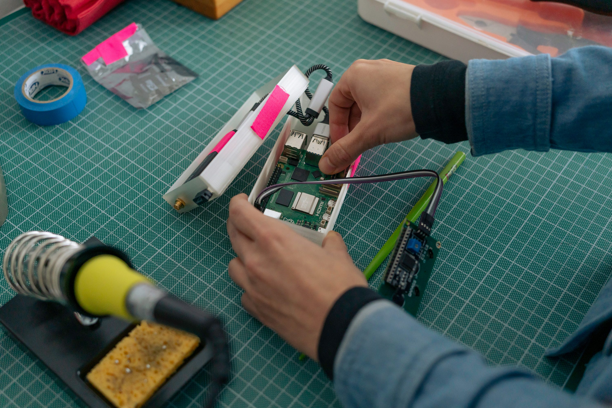
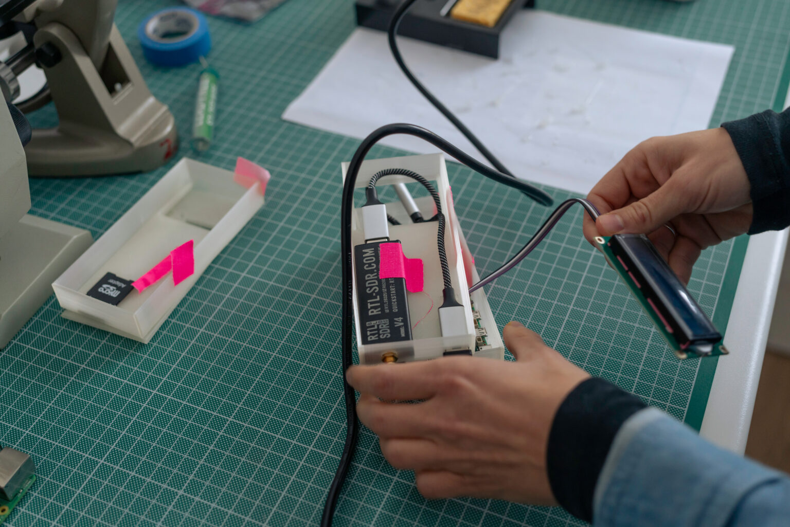
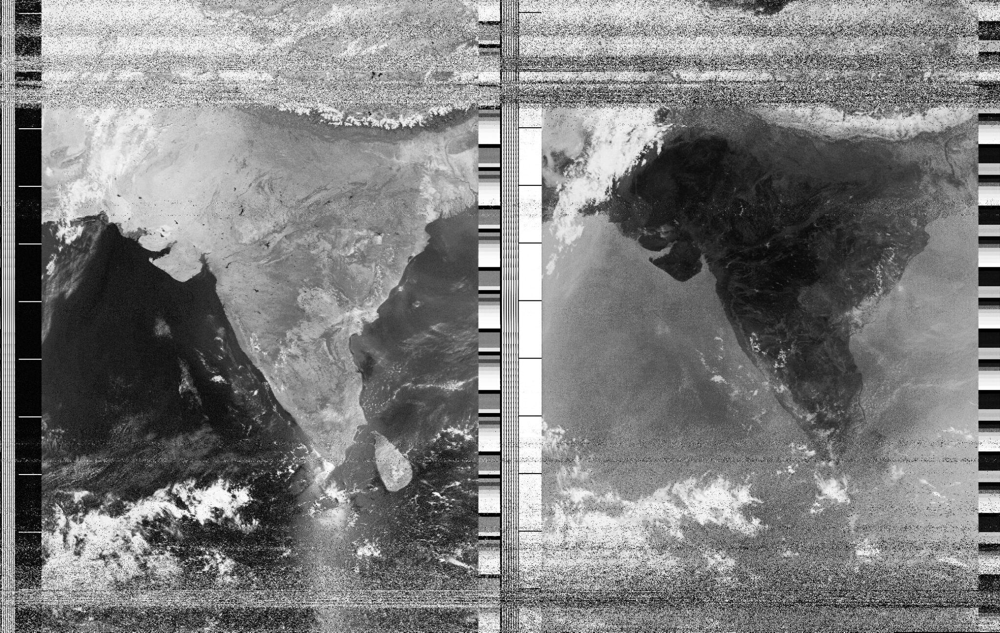
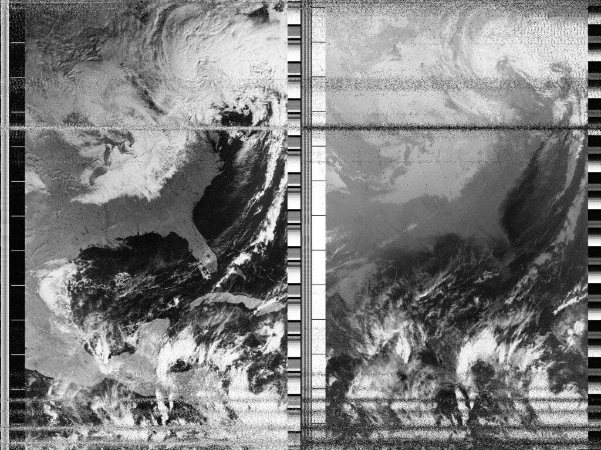
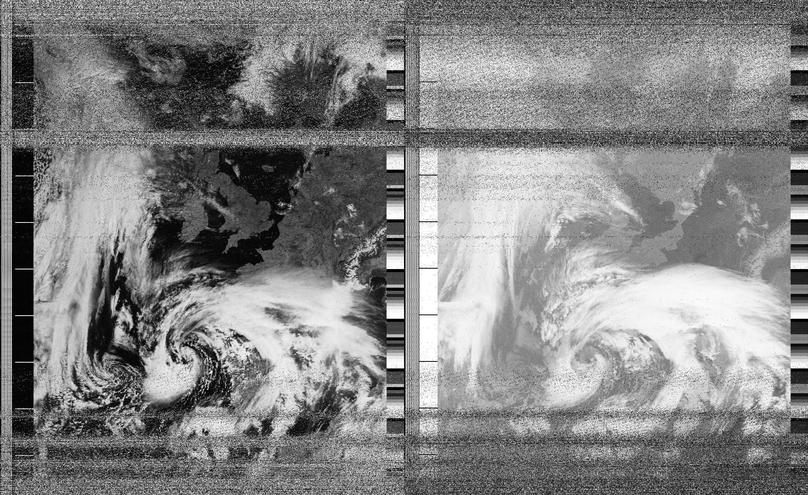

← Back to Projects
https://open-weather.community/ags/


open-weather Automatic Ground Station
Medium: Open-source Hardware and Software
Year: 2024-2025
Role: Hardware Designer & Lead Developer
Context: Deployed at 10+ locations worldwide
The open-weather Automatic Ground Station (AGS) is an open-source Raspberry Pi-based radio receiver that automatically captures satellite imagery from NOAA weather satellites. Developed as a collaboration with the open-weather collective, the AGS democratizes access to real-time satellite weather imagery by providing an affordable, easy-to-build ground station that operates autonomously.
Details
- Developed in collaboration with open-weather collective.
- API development by Rectangle (Lizzie Malcolm and Dan Powers).
- Debugging assistance by Bill Liles (NQ6Z).
- Supported by:
- Open Science Hardware Foundation (USA)
- Alfred P. Sloan Foundation (USA)
- Arts and Humanities Research Council (UK)
- Deployed locations include Florida, Pune (India), Vienna (Austria), Gilboa (NY), Cornwall (UK), Arbroath (Scotland), with stations in progress in Phnom Penh (Cambodia), Valparaiso (Chile), Seattle, Nicosia (Cyprus), Perth (Australia), and Barcelona (Spain).
The completed AGS device, ready for deployment.

Assembled ground station components including Raspberry Pi and radio receiver.



NOAA-18 weather satellite image received over Florida.
